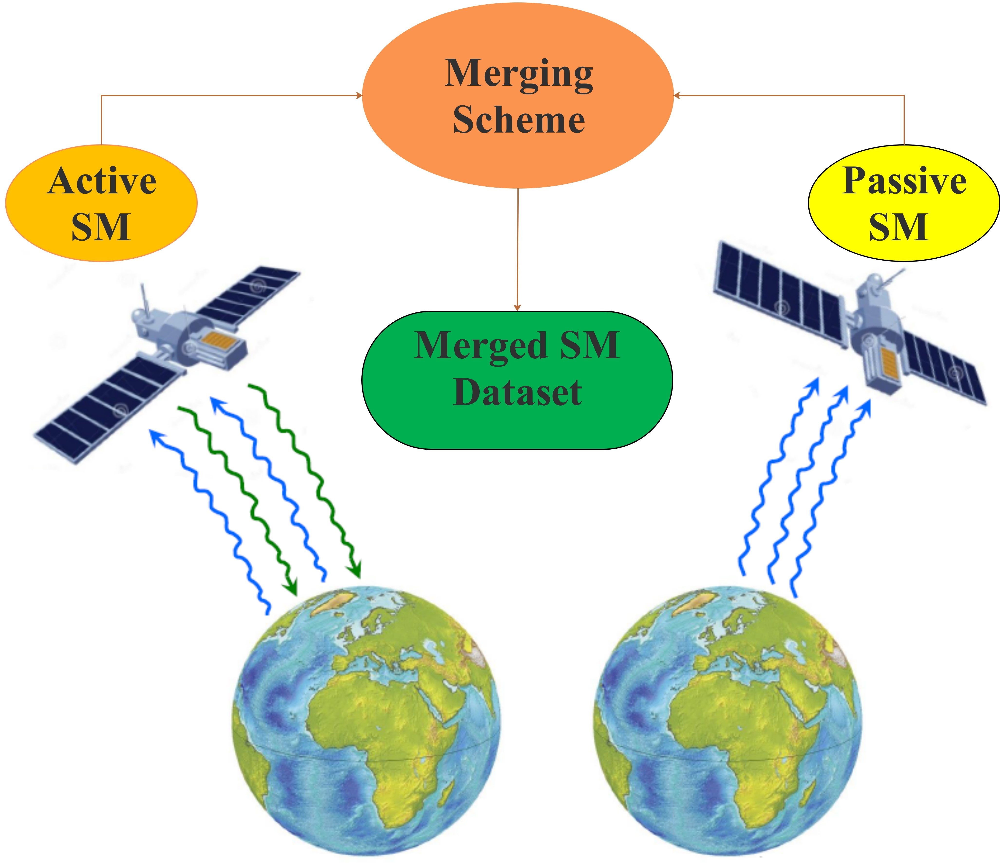
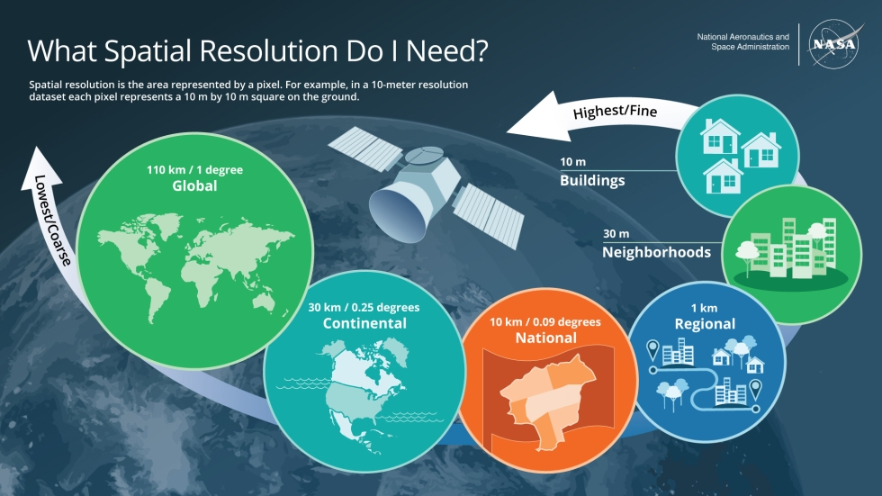
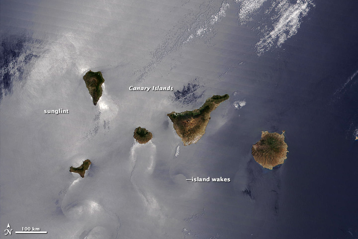
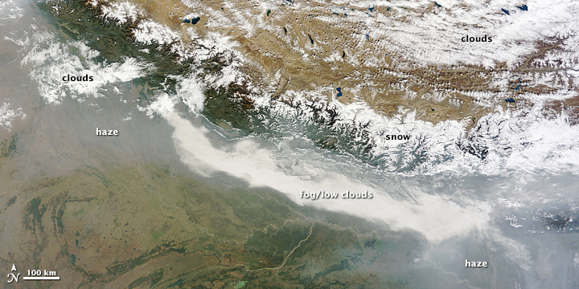

1 Week1-Introduction
1.1 Summary
1.1.1 Active vs Passive
The content of this chapter focuses on the working principles of active and passive remote sensing.
| Passive | Active | |
|---|---|---|
| Energy use | Use existing energy, do not emit anything | Has an illuminated energy source |
| Detection method | Detects energy reflected from the sun, receives electromagnetic radiation emitted or reflected by the observed object itself | Actively emits electronically mediated waves and then waits for reception |
| Examples | Human eyes, cameras, satellite sensors | Radar, x-ray, lidar |
Based on respective characteristics, we are able to summarize the benefits and limitations of each of the two types of remote sensing.
| Benefits | Limitations |
|---|---|
| 1. Unaffected by sunlight and able to observe both day and night. | 1. Reflected signals may be interfered with by other objects in nature or by electromagnetic noise. |
| 2. More sensors, need to adjust the wavelength of emission, able to measure height, terrain, wind, etc. | 2. Requires its own energy to transmit signals, limiting its use in drones or satellite platforms. |
| 3. Have penetration capabilities such as SAR to penetrate clouds and vegetation to obtain information on surface or subsurface structures. |
| Benefits | Limitations |
|---|---|
| 1. Low energy consumption, requiring less energy, long mission times, low manufacturing and operating costs, and can be easily deployed and utilized on a large scale. | 1. Dependent on lighting conditions, performance is limited under poor ambient light conditions. The spectral range is also dependent on the spectral properties of the natural light source, resulting in limitations in observing certain specific wavelength bands. |
| 2. Capable of capturing a wide range of spectral information using sunlight, it is suitable for multiple scenarios | 2. The received irradiance is mainly off-water irradiance, which can only be observed in specific atmospheric windows, and signals in other bands will be absorbed and masked. Susceptible to atmospheric components. |
Future Development Trends
Miniaturization and refinement of equipment: I believe that remote sensing equipment needs to address its own limitations, for example, active remote sensing equipment needs to become smaller and lighter in order to be deployed on a wide range of platforms. Similarly, passive remote sensing should be widely used in low-cost, high-frequency Earth observation missions.
Continued integration with machine learning: Advanced algorithms are indispensable for both processing and analyzing remote sensing data. Deep learning models such as convolutional neural networks (CNN) are now widely used to automatically identify and classify features from active remote sensing data.

In the future, there is a need to develop more optimized machine learning models that combine active and passive remote sensing data to be able to process and interpret remote sensing data more accurately.
1.1.2 Consider how electromagnetic waves interact
Interactions at the Earth’s surface
Absorption by surfaces: Surface materials absorb electromagnetic waves of certain wavelengths. For example, vegetation strongly absorbs infrared light but reflects near-infrared light. By observing the absorption properties at specific wavelengths, the nature and condition of the surface material can be inferred.
Transmission through the surface: When electromagnetic waves such as sunlight reach the Earth’s surface, they are reflected back into space. Different surface types, such as water bodies, vegetation, and urban buildings, have different reflectance properties that can be quantified by a bidirectional reflectance distribution function (BRDF). By analyzing the reflectance at different wavelengths, surface materials can be identified and classified.
Atmospheric interactions
1.Scattering: as electromagnetic waves pass through the atmosphere, they scatter with gas molecules, water droplets, and other particles in the atmosphere. For example, Rayleigh scattering gives the sky a blue color. This scattering changes the direction and intensity of electromagnetic waves and affects the quality of remotely sensed data.
2.Countermeasure: Removal of the sensor’s exposure to atmospheric scattering using synthetic aperture radar (SAR) and through atmospheric correction

1.1.3 Resolution
We explored 4 resolutions for remotely sensed data
| Resolution type | Characteristic explanation |
|---|---|
| Spectral | Obtaining values for each wavelength (or band of multiple wavelengths) in the electromagnetic spectrum to create spectral features, which may be discrete (multispectral) or continuous (hyperspectral) |
| Spatial | In most cases, remotely sensed data are rasters. Spatial resolution refers to the size of the raster image element |
| Temporal | Temporal resolution relates to how frequently surface data are updated, the time interval between revisits to the same location by a remote sensing sensor |
| Radiometric | The ability of a sensor to recognize and display small differences in energy. For example, an 8-bit image can represent 256 different gray levels (or colors). In an 8-bit image, the transition from dark to light is smoother and more subtle changes can be captured |
Notably, sensors that are able to resolve narrower band widths, have more bands, cover a wider spectral range, and have a finer band layout for key spectral features are considered to have higher spectral resolution.
Often temporal and spatial resolution together influence the suitability of remotely sensed data for a particular application, e.g. a sensor with a low spatial resolution but a high temporal resolution (MODIS) is better suited for tracking and monitoring environmental change or agricultural development, etc.

1.2 Applications
1.2.1 Remote sensing applications are characterised by inter-temporal and spatial features
Firstly, remote sensing technology can be applied to Earth issues at different spatial scales, from a small pixel to a scene, from a region to a country, and has become the main way of global Earth observation.

In addition, remote sensing has the technology to analyse across time, and dynamic monitoring of indicators such as temperature, precipitation, biomass and other indicators in nature or targets such as lakes, rivers and roads can be accomplished in instantaneous or long time series, which can be determined by the temporal resolution of different remote sensing.
1.2.2 Remote sensing technology has been used in all aspects of natural resources and human activities.
In the field of environment remote sensing can perform a series of environmental monitoring including soil erosion, water pollution, urban heat island, etc. Xu et al. (Xu & Chen 2004) 6th band acquisition of thermal remote sensing data from Landsat TM/ETM+ imagery observed the changes of urban heat island phenomenon in Xiamen, China within 11 years. In resource management remote sensing can be engaged in geological structure identification, glacier, coastline and island change monitoring, etc. Ke et al. (Ke et al. 2016) demonstrated different types of glaciers in three typical glacier-intensive subregions of the plateau based on elevation data from ICESat and Landsat images. In disaster prevention and mitigation, the role of remote sensing in monitoring extreme weather such as El Niño is irreplaceable.Hoque et al. (Hoque et al. 2017) suggest that object-based image analysis using optical images with a resolution of up to 30 metres can provide better impact assessment and recovery from tropical cyclones. I believe that the role of remote sensing in global environmental monitoring and response to climate change will be further enhanced as the impacts of global environment and climate change become more significant.

1.3 Reflection
I had been exposed to the course Introduction to Remote Sensing in my undergraduate studies, but had less practical use of remote sensing. Having used a combination of NPP-VIIRS nighttime lighting data and impervious surface data to define the extent of urban built-up areas in my undergraduate projects, I have developed a unique interest in the process of using remote sensing imagery to portray human activity. For this course, I think it can teach me well about how remote sensing technology can be used to solve practical environmental problems in the context of sustainable development. This course has taught me about downloading and using different sensors and has given us the opportunity to utilise platforms such as SNAP to manipulate Sentinel imagery, giving us very much hands-on opportunities.
In my future studies, I hope to get more exposure to different remote sensing sensors and methods of processing remote sensing data, applying them to practical research and integrating them with existing environmental policies, such as helping to meet carbon neutral targets, is something I hope to do and will make this course more meaningful.
1.4 References
Hoque, M.A.-A. et al., 2017. Tropical cyclone disaster management using remote sensing and spatial analysis: A review, International Journal of Disaster Risk Reduction. Amsterdam: Elsevier, årg. 22, s. 345–354.
Ke, L. et al., 2016. Remote sensing of glacier distribution and change over the Qinghai-Tibet Plateau [Online]. New York: IEEE.
https://www.webofscience.com/wos/woscc/full-record/WOS:000389576700094
Xu, H.Q. & Chen, B.Q., 2004. Remote sensing of the urban heat island and its changes in Xiamen City of SE China, International journal of disaster risk reduction, årg. 16, nr. 2, s. 276–281.